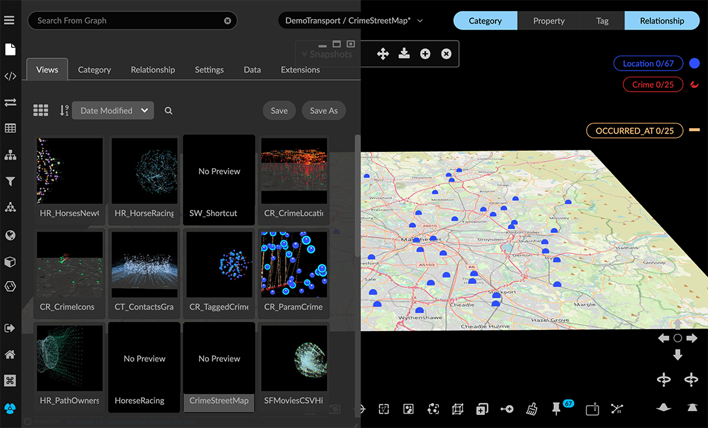
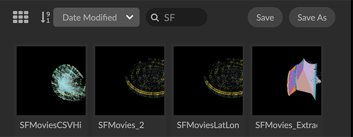
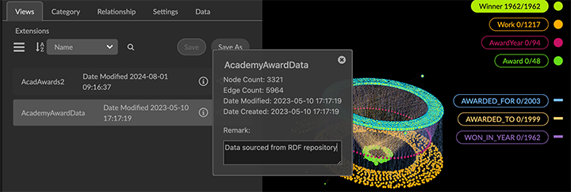
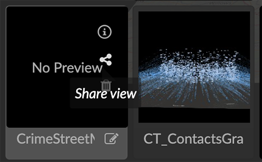
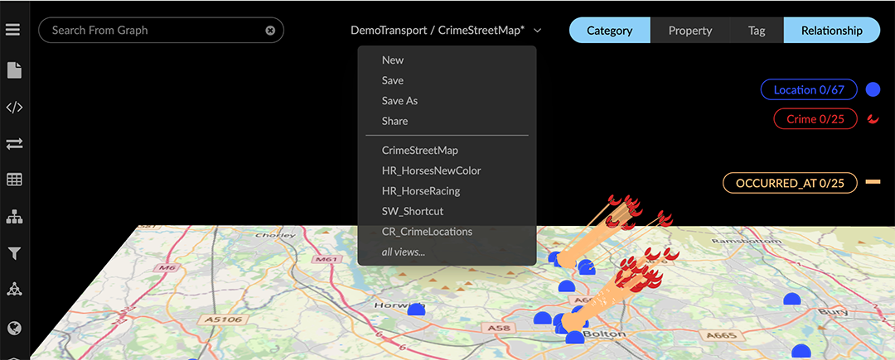
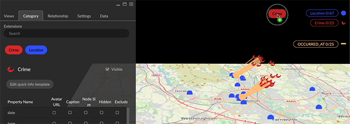
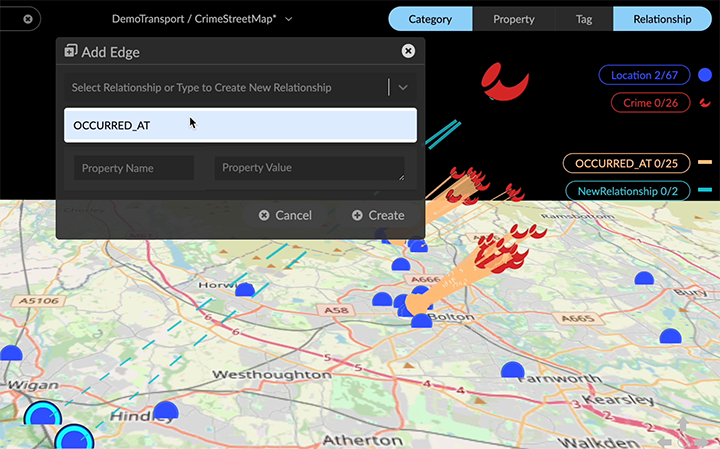

GraphXR 2.17.0 Release Notes Release Date: September 9, 2024 The GraphXR 2.17.0 release includes new features, usability enhancements and significant security and user access enhancements. In GraphXR, click About at the bottom left of the project space, then click on the current release tag to display a digest of features introduced in current and past releases. New Features 2.17.0 New UI for data Views Views tab. In the Project panel, saved data views appear in the new Views tab.  Use it to: Load a view by clicking on a thumbnail preview or list item. Display views as a list or thumbnails. Views created in previous versions of GraphXR are still available, but do not include a preview. Sort views by Name, Date Modified, or Date Created, in either ascending or descending order. Filter views by entering all or part of a view name in the view search bar.  Display an information window with the number of nodes and edges, the date created and date last modified, and a Remarks field to annotate the view.  Save the current view or Save As_ a new view. Use icons on the preview tile or list to share, delete, or rename a view.  To Import, or to download views (with Save GXRF or Export All Views) you now use the Project>Data tab. Views menu. Select and load, save, save as a new view, or delete a view without opening the Views tab. The menu is at the top of the project space to the left of the legend.  The current project and view name displays. If the view was modified since it was loaded, an asterisk appears next to the name. In the dropdown menu, you can save the current view, share it, save it as a new view, or load a different view. The menu displays the 5 most recently saved views. Choose select all views… at the bottom of the menu to display all the views saved in the project. Easy Node. Add a node by drag and drop from its label pill in the Project > Category tab.  Easy edge. Create new edges by Ctrl-click + drag from a selection of nodes to another node, to open the Add Edges dialog.  Search Categories. A search bar is added to the Category panel. Sphere Layout is added to the Geometric layouts, and available in Quick Layout and right-click Layout menus. Collection edges. When collections are created, edges are also added from collected nodes to any collection nodes that their neighbor nodes belong to. These edges are not saved to an external database such as Neo4j. Usability Enhancements A Project opens as soon as it is created. Expand defaults to expand all relationships. Visibility and readability of search terms, toolbar icons, and tooltips have been improved. Toolbar icons are rearranged into two or more rows when you reduce the width of the browser window, keeping them more accessible. Deep linking occurs such that: The last panel opened will be open after refreshing the page. You can open a view with a Grove book opened or hidden in the background. A menu item for registered admin users opens the Admin panel from the Projects page. Templates can be imported and exported from the Admin panel. A priority (0, 1, or 2) can be set that controls the order templates appear in the Project page menu. The right-click menu and its items are added to UI Configuration. An API has been created for additional menu customization. Performance Enhancements Faster response of Fly Out and Center To in large graphs. Faster response for Ring and Tree ego layouts (30 sec. for 30k nodes). Improved Security and User Access LDAP (Lightweight Directory Access Protocol) support. GraphXR can now be configured to work with your LDAP infrastructure, allowing both normal and admin GraphXR users to login using their LDAP credentials. LDAP is an open, vendor-neutral application protocol for accessing and maintaining static data within directories (e.g. usernames, passwords, email addresses, printer connections, and more). LDAP can also handle authentication, so users can sign on just once and access many different files on the server. Option to disable user / password login, for organizations requiring SSO. Option to encrypt views on disk. Project Configuration MinIO/S3 support added to GraphXR through Docker builds. MinIO is an open source object storage system designed for large-scale AI and ML workloads. Removed 2.17.0 None Extensions 2.17.0 For Enterprise subscriptions, additional analytic capability can be provided, including: AI-enabled entity extraction and knowledge mapping of unstructured data One-stop connection to external OSINT sources Connection to databases in SQL, document, or mixed formats No-code visual Cypher queries Observable-based javascript notebooks For information about extensions, please contact Kineviz. Supported Environments 2.17.0 WINDOWS, MAC OSX, AND LINUX CLOUD, PRIVATE CLOUD, AND ON-PREMISES DATA HOSTING OCULUS RIFT, HTC VIVE, AND WINDOWS MIXED REALITY The GraphXR client runs best in Google Chrome; works in Safari. Compatibility with other browsers may vary. The GraphXR client includes beta support for Virtual Reality (VR) hardware in the Google Chrome browser via WebXR. GraphXR Cloud supports local and cloud storage. In addition, GraphXR Enterprise is available via on-premises or private cloud deployments. For more information, please contact Kineviz.